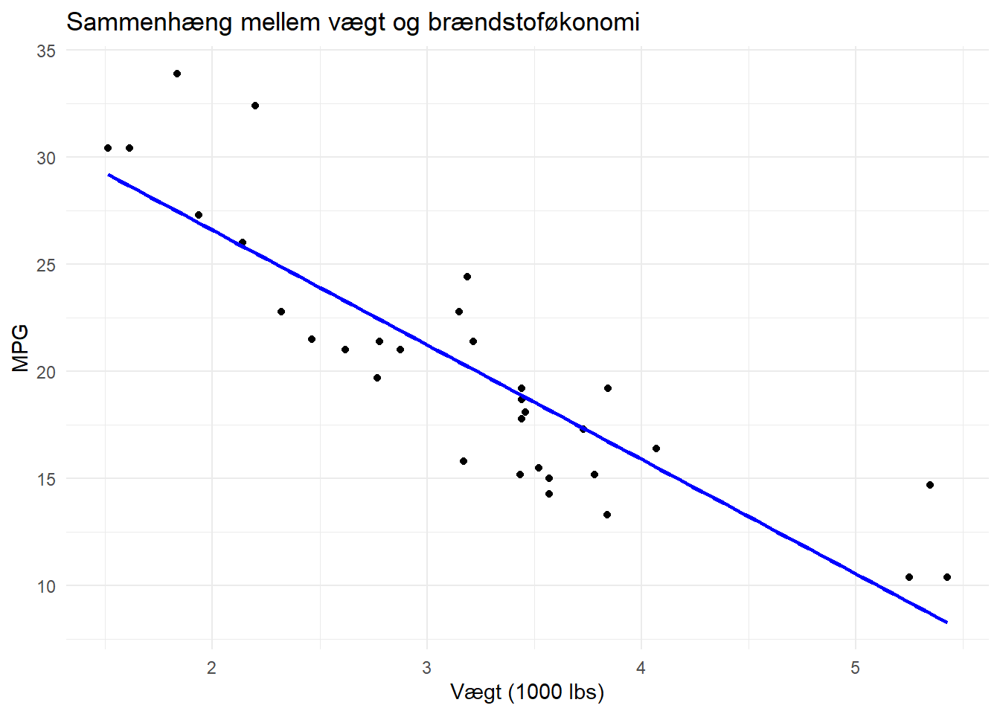

mit_foerste_objekt <- "Hello world!"Kodeoversigt
Statistik 15 ECTS, Ilisimatusarfik
Introduktion
Dette dokument giver en oversigt over grundlæggende kode og funktioner i R, som vi skal bruge i kurset. Det er en guide, der hjælper dig med at komme i gang med at oprette objekter, indlæse pakker, arbejde med datasæt og lave grundlæggende datavisualiseringer med ggplot2.
Du vil finde eksempler på, hvordan du kan arbejde med datasæt, omkode variable og lave forskellige typer af plots, som du kan tilpasse til dine egne data. Brug dokumentet som en opslagsbog, når du skriver din egen kode eller har brug for at forstå, hvordan specifikke funktioner fungerer.
Husk at du kan kopiere koden direkte fra dokumentet og tilpasse den til dine egne opgaver. Der er også inkluderet eksempler på, hvordan du gemmer dine resultater og visualiseringer.
Objekter
I R er alt, hvad du arbejder med, et objekt. Det kan være tal, tekst, lister eller datasæt. Du opretter objekter, giver dem et navn og kan bruge dem senere.
Du opretter et objekt ved at give det et navn og skrive en pil til højre for navnet, og dernæst definere indholdet af objektet. F.eks. kan vi gemme et objekt, der hedder “mit_foerste_objekt” der indholder teksten “Hello world!”. Vi definerer objektet og dets indhold med en pil
Vi kan printe/vise indholdet at objektet ved at køre det i R konsollen eller scriptet:
mit_foerste_objekt[1] "Hello world!"Du kan naturligvis også gemme tal som objekter…
mit_tal <- 2lave beregninger med dine objekter…
mit_tal + 2[1] 4og gemme dine resultater i objekter…
resultat <- mit_tal + 2
resultat[1] 4måske vigtigst af alt kan gemme datasæt (dataframes) i objekter:
df <- datasætPakker
I R indlæser vi pakker, der indeholder forskellige funktioner. Hver pakken skal installeres én gang, og derefter indlæses hver gang vi åbner R-Studio igen.
Installér pakker
Pakker installeres direkte i konsollen eller scriptet. Her indlæses f.eks. pakken tidyverse, der indeholder en masse gode data-funktioner:
install.packages('tidyverse')Man kan også indlæse flere pakker samtidig, f.eks. tidyverse OG janitor, som er god til bl.a. tabeller:
install.packages(c('tidyverse', 'janitor')) Indlæs pakker
Pakker indlæses med funktionen library() i dit script.
library('tidyverse') Man kan kun indlæse en enkelt pakke af gangen, med mindre man anskaffer sig en package-manager såsom pacmann. Pacman er selv en pakke, der f.eks. indeholder en funktion p_load til at indlæse flere andre pakker på en gang:
pacman::p_load(tidyverse, janitor)Datasæt
Indlæs datasæt
R kan som udgangspunkt kun finde datasæt, der er gemt i samme mappe, som den I arbejder i. Derfor er det smart at gemme sine datasæt og filer i samme mappe, som sit R project.
Hvis du er faret vild kan du bruge funktionen getwd() til at printe stien til den mappe, du arbejder i:
getwd()[1] "C:/Users/mmn/Dropbox/Ilisimatusarfik"For at indlæse datasæt skal I bruge specifikke funktioner, alt efter hvilket filformat datasættet er.
Til excel-filer:
library(readxl)
df_excelfil <- read_xlsx("excel_fil.xlsx")Til R-filer:
df_Rfil <- readRDS("r_fil.rds")Hvis dit datasæt ligger i en undermappe, der hedder data, skal du specificere det i stien:
df_Rfil <- readRDS("data/r_fil.rds")Eksempel
Indlæs f.eks. firmadatasættet med funktionen readRDS og gem datasættet i et objekt, der hedder df (for dataframe):
df <- readRDS("firma_data.rds")Åben dataset
Brug View() til at åbne datasættet som en tabel
View(df)Brug names() til at printe navnene på variablene i datasættet
names(df)[1] "navn" "industri" "ansatte" "omsaetning" "tilfredshed"Data wrangling
En vigtig fordel i kodebaseret data software er, at vi kan skrive kode, der transformerer vores data til at se ud, præcis som vi vil have det. Det kaldes i folkemunde data wrangling!
Omdøbe variable
Når vi indlæser et datasæt kan det ofte være smart at sørge for, at variablenes navne er ensartede, så programmet kan læse dem. F.eks. er computere sjældent glade for mellemrum og æ,ø,å…
names(df)[1] "køn" "tid" "Befolkningen.1..januar"Brug clean_names() fra pakken library(janitor) til at ensarte variablenes navne, når du loader et nyt datasæt:
library(janitor)
df <- clean_names(df)
names(df)[1] "kon" "tid" "befolkningen_1_januar"I andre tilfælde vil vi gerne omdøbe variable manuelt. Brug rename() fra pakken library(tidyverse) til manuelt at omdøbe variable:
library(tidyverse)
df <- df %>% rename(koen = kon)
names(df)[1] "koen" "tid" "befolkningen_1_januar"Omkodning af variable
Man har ofte behov for at omkode/recode sine variable til færre/andre kategorier eller typer. Ofte vil vi gerne omkode mange variable på én gang. Derfor har pakken dplyr (under tidyverse) introduceret funktionen mutate().
Logikken er: mutate(df, ny_variabel = gammel_variabel)
Subsetting
Nogle gange er vi kun interesserede i at arbejde med særlige dele af vores datasæt. Måske er vi f.eks. kun interesseret i to variable fra vores datasæt, eller kun observationer med specifikke værdier på udvalgte variable. I de tilfælde kan vi lave “subsets” af vores datasæt, hvor vi udvælger de specifikke informationer, som vi gerne vil beholde.Når vi “subsetter” udvælger vi data fra vores datasæt ud for logiske udsagn. To nyttige funktioner i arbejde med datasæt/matricer er select() og filter()
Select() funktionen bruges til at udvælge kolonner/variable i datasættet. Hvis man f.eks. kun er interesseret i variablene koen og net_indkomst, kan man pipe sit dataset over i select(), vælge variablene og gemme dem i et nyt datasæt:
ny_df <- df %>% select(koen, net_indkomst)Mens select() uvælger kolonner/variable, kan man bruge filter() til at vælge rækker/observationer på baggrund af specifikationer. Hvis man f.eks. kun er interesseret i resultater for kvinder i sit datasæt, kan man pipe sit dataset over i filter() og dermed kun beholde observationer, der har værdien = “kvinde” på variablen “koen”:
kvinde_df <- df %>% filter(koen=="Kvinde")ggplot
ggplot2 er en datavisualiseringspakke i R. Den er bygget på grammar of graphics og giver fleksibilitet til at skabe avancerede plots. I skal bruge den til at bygge figurer!
De tre grundelementer i ggplot2
- Data: Data, du vil plotte
- Aesthetic mappings (aes): Kortlægning af variabler
- Geometriske objekter (geom): plot-type, f.eks. søjlediagram, scatterplot, eller boksplot
ggplot2 er som at bygge med LEGO-klodser: Du tilføjer forskellige lag for at skabe det endelige plot. Hvert lag bygger på det forrige og tilføjer nye visuelle elementer. Basen er data, og du bygger videre med lag som akser, farver og geometriske former
ggplot(data = <DATA>) +
aes(x = <X-variabel>, y = <Y-variabel>) +
geom_<GEOM>()Typer af plots
Der findes mange typer af plots eller geoms, som er gode til forskellige ting. Her er et par grundlæggende:
Visualisering af én variabel
Brug
geom_bar()til kategoriske variableBrug
geom_histogram()ellergeom_boxplottil nummeriske variable
Visualisering af flere variable
Brug
geom_bar()ellergeom_jitter()til to kategoriske variableBrug
geom_boxplottil en nummerisk variabel og en kategoriske variabel.Brug
geom_point()til to nummeriske variable.
Nedenfor illustreres hver plottype med udgangspunkt i datasættet mtcars (built in datasæt på biler).
mtcars mpg cyl disp hp drat wt qsec vs am gear carb
Mazda RX4 21.0 6 160.0 110 3.90 2.620 16.46 0 1 4 4
Mazda RX4 Wag 21.0 6 160.0 110 3.90 2.875 17.02 0 1 4 4
Datsun 710 22.8 4 108.0 93 3.85 2.320 18.61 1 1 4 1
Hornet 4 Drive 21.4 6 258.0 110 3.08 3.215 19.44 1 0 3 1
Hornet Sportabout 18.7 8 360.0 175 3.15 3.440 17.02 0 0 3 2
Valiant 18.1 6 225.0 105 2.76 3.460 20.22 1 0 3 1
Duster 360 14.3 8 360.0 245 3.21 3.570 15.84 0 0 3 4
Merc 240D 24.4 4 146.7 62 3.69 3.190 20.00 1 0 4 2
Merc 230 22.8 4 140.8 95 3.92 3.150 22.90 1 0 4 2
Merc 280 19.2 6 167.6 123 3.92 3.440 18.30 1 0 4 4
Merc 280C 17.8 6 167.6 123 3.92 3.440 18.90 1 0 4 4
Merc 450SE 16.4 8 275.8 180 3.07 4.070 17.40 0 0 3 3
Merc 450SL 17.3 8 275.8 180 3.07 3.730 17.60 0 0 3 3
Merc 450SLC 15.2 8 275.8 180 3.07 3.780 18.00 0 0 3 3
Cadillac Fleetwood 10.4 8 472.0 205 2.93 5.250 17.98 0 0 3 4
Lincoln Continental 10.4 8 460.0 215 3.00 5.424 17.82 0 0 3 4
Chrysler Imperial 14.7 8 440.0 230 3.23 5.345 17.42 0 0 3 4
Fiat 128 32.4 4 78.7 66 4.08 2.200 19.47 1 1 4 1
Honda Civic 30.4 4 75.7 52 4.93 1.615 18.52 1 1 4 2
Toyota Corolla 33.9 4 71.1 65 4.22 1.835 19.90 1 1 4 1
Toyota Corona 21.5 4 120.1 97 3.70 2.465 20.01 1 0 3 1
Dodge Challenger 15.5 8 318.0 150 2.76 3.520 16.87 0 0 3 2
AMC Javelin 15.2 8 304.0 150 3.15 3.435 17.30 0 0 3 2
Camaro Z28 13.3 8 350.0 245 3.73 3.840 15.41 0 0 3 4
Pontiac Firebird 19.2 8 400.0 175 3.08 3.845 17.05 0 0 3 2
Fiat X1-9 27.3 4 79.0 66 4.08 1.935 18.90 1 1 4 1
Porsche 914-2 26.0 4 120.3 91 4.43 2.140 16.70 0 1 5 2
Lotus Europa 30.4 4 95.1 113 3.77 1.513 16.90 1 1 5 2
Ford Pantera L 15.8 8 351.0 264 4.22 3.170 14.50 0 1 5 4
Ferrari Dino 19.7 6 145.0 175 3.62 2.770 15.50 0 1 5 6
Maserati Bora 15.0 8 301.0 335 3.54 3.570 14.60 0 1 5 8
Volvo 142E 21.4 4 121.0 109 4.11 2.780 18.60 1 1 4 2Barplot (univariat)
Variablen cyl (antal cylindre), som er en kategorisk variabel, kan visualiseres via. et barplot:
ggplot(mtcars) +
aes(x = factor(cyl)) + # Omform cyl til en kategorisk variabel
geom_bar() +
labs(
title = "Antal biler pr. antal cylindere",
x = "Antal cylindre",
y = "Antal biler"
) +
theme_minimal()
Histogram (univariat)
Variablen mpg (miles per gallon), som er en numerisk, kan visualiseres via. et histogram:
ggplot(mtcars) +
aes(x = mpg) +
geom_histogram() +
labs(
title = "Histogram af brændstoføkonomi",
x = "Miles per gallon (mpg)",
y = "Antal biler"
) +
theme_minimal()`stat_bin()` using `bins = 30`. Pick better value with `binwidth`.
Boksplot (univariat)
Variablen mpg (miles per gallon), som er en numerisk, kan også visualiseres via. et boksplot:
ggplot(mtcars) +
aes(x = "", y = mpg) + # "" for at undgå en x-akse kategori, og y for at angive mpg
geom_boxplot(fill = "#003366", color = "black") + # Ændring af farver
labs(
title = "Boksplot af brændstoføkonomi",
x = "", # Tomt for at undgå en x-akse etiket
y = "Miles per gallon (mpg)"
) +
theme_minimal()Barplot (bivariat)
Vi kan visualisere sammenhængen mellem variablene cyl (antal cylindre) og gear (antal gear), som begge er kategoriske variabler via barplot():
ggplot(mtcars) +
aes(x = factor(cyl), fill = factor(gear)) +
geom_bar(position = "dodge") +
labs(
title = "Fordeling af biler pr. cylinder og gear",
x = "Antal cylindre",
y = "Antal biler",
fill = "Antal gear"
) +
theme_minimal()
Scatterplot (bivariat)
Vi kan også visualisere sammenhængen mellem cyl (antal cylindre) og gear (antal gear) via geom_jitter(). Et jitter-plot er en variant af et scatterplot, hvor punkterne bliver “spredt” (jittered) lidt tilfældigt, når de overlapper hinanden:
ggplot(mtcars) +
aes(x = factor(cyl), y = factor(gear)) +
geom_jitter(width = 0.2, height = 0.2) +
labs(
title = "Spredning af biler mellem cylinder og gear",
x = "Antal cylindre",
y = "Antal gear"
) 
Boksplot (bivariat)
Vi kan bruge et boksplot til at se fordelingen af variablene mpg (nummerisk) over cyl (kategorisk):
ggplot(mtcars) +
aes(x = factor(cyl), y = mpg) +
geom_boxplot() +
labs(
title = "Brændstoføkonomi pr. cylinder",
x = "Antal cylindre",
y = "Miles per gallon"
) +
theme_minimal()
Scatterplot (bivariat)
Og vi kan bruge et scatterplot til at se sammenhængen mellem variablene wt (vægt) og mpg (miles per gallon), som begge er numeriske variabler med geom_point():
ggplot(mtcars) +
aes(x = wt, y = mpg) +
geom_point() +
labs(
title = "Sammenhæng mellem vægt og brændstoføkonomi",
x = "Vægt (1000 lbs)",
y = "Miles per gallon"
) +
theme_minimal()
Scatterplot (bivariat) med regressionslinje
Det er også muligt at lægge flere plots ovenpå hinanden med ggplot. F.eks. kan I lægge en regressionslinje indover jeres scatterplot med geom_smooth() :
ggplot(mtcars) +
aes(x = wt, y = mpg) +
geom_point() +
geom_smooth(method = "lm", color = "blue", se = FALSE) + # Tilføjer en lineær regressionslinje
labs(
title = "Sammenhæng mellem vægt og brændstoføkonomi",
x = "Vægt (1000 lbs)",
y = "Miles per gallon"
) +
theme_minimal()`geom_smooth()` using formula = 'y ~ x'
Ændring af plot-udseende
ggplots kan nemt ændres ved at tilføje elementer til graferne (ligesom LEGO-klodser). Nedenfor illustreres et par typiske ændringer, med udgangspunkt i et simpelt plot, der kortlægger variablene wt (vægt) til x-aksen og mpg (miles per gallon) til y-aksen:
library(ggplot2)
ggplot(data = mtcars) +
aes(x = wt, y = mpg) +
geom_point()Man kan bruge funktionen labs() til at tilføje titel og asketitler:
library(ggplot2)
ggplot(data = mtcars) +
aes(x = wt, y = mpg) +
geom_point() +
labs(
title = "Relationship between Weight and Fuel Efficiency",
x = "Weight (1000 lbs)",
y = "Miles per gallon"
)
Man kan ændre dine plots visuelle udseende med themes(). Man kan f.eks. ændre baggrunde, akser, tekst, grids, osv., ved at bruge forskellige temaer ggplot2 kommer med flere indbyggede temaer, f.eks. theme_minimal():
ggplot(data = mtcars) +
aes(x = wt, y = mpg) +
geom_point() +
labs(
title = "Relationship between Weight and Fuel Efficiency",
x = "Weight (1000 lbs)",
y = "Miles per gallon") +
theme_minimal()Det er ofte nødvendigt at skrue på værdierne på akserne. Afhængigt af hvilken akse man vil justere bruger man:
scale_x_discrete(): Bruges til diskrete (kategoriske) værdier på x-aksenscale_x_continuous(): Bruges til kontinuære (numeriske) værdier på x-aksenscale_y_discrete(): Bruges til diskrete værdier på y-aksenscale_y_continuous(): Bruges til kontinuære værdier på y-aksen.
ggplot(data = mtcars) +
aes(x = wt, y = mpg) +
geom_point() +
labs(
title = "Relationship between Weight and Fuel Efficiency",
x = "Weight (1000 lbs)",
y = "Miles per gallon") +
theme_minimal()+
scale_x_continuous(limits = c(1, 6), breaks = seq(1, 6, by = 1)) +
scale_y_continuous(limits = c(0, 40), breaks = seq(0, 40, by = 5)) 
Man kan også ændre farver med color()
ggplot(data = mtcars) +
aes(x = wt, y = mpg) +
geom_point(color="purple") +
labs(
title = "Relationship between Weight and Fuel Efficiency",
x = "Weight (1000 lbs)",
y = "Miles per gallon") +
theme_minimal()+
scale_x_continuous(limits = c(1, 6), breaks = seq(1, 6, by = 1)) +
scale_y_continuous(limits = c(0, 40), breaks = seq(0, 40, by = 5)) 
Man kan ændre tekst-størrelsen på plottets elementer med theme():
library(ggplot2)
ggplot(data = mtcars) +
aes(x = wt, y = mpg) +
geom_point(color="purple") +
labs(
title = "Relationship between Weight and Fuel Efficiency",
x = "Weight (1000 lbs)",
y = "Miles per gallon"
) +
theme_minimal() +
scale_x_continuous(limits = c(1, 6), breaks = seq(1, 6, by = 1)) +
scale_y_continuous(limits = c(0, 40), breaks = seq(0, 40, by = 5))+
theme(
plot.title = element_text(size = 18), # Ændrer titelstørrelsen
axis.title.x = element_text(size = 14), # Ændrer størrelsen på x-aksetitlen
axis.title.y = element_text(size = 14), # Ændrer størrelsen på y-aksetitlen
axis.text.x = element_text(size = 12), # Ændrer størrelsen på x-akse tekst (ticks)
axis.text.y = element_text(size = 12)) # Ændrer størrelsen på y-akse tekst (ticks)
Nogle gange kan det også være nyttigt at rotere sit plot med coord_flip():
library(ggplot2)
ggplot(data = mtcars) +
aes(x = wt, y = mpg) +
geom_point(color="purple") +
labs(
title = "Relationship between Weight and Fuel Efficiency",
x = "Weight (1000 lbs)",
y = "Miles per gallon"
) +
theme_minimal() +
scale_x_continuous(limits = c(1, 6), breaks = seq(1, 6, by = 1)) +
scale_y_continuous(limits = c(0, 40), breaks = seq(0, 40, by = 5))+
theme(
plot.title = element_text(size = 18), # Ændrer titelstørrelsen
axis.title.x = element_text(size = 14), # Ændrer størrelsen på x-aksetitlen
axis.title.y = element_text(size = 14), # Ændrer størrelsen på y-aksetitlen
axis.text.x = element_text(size = 12), # Ændrer størrelsen på x-akse tekst (ticks)
axis.text.y = element_text(size = 12)) + # Ændrer størrelsen på y-akse tekst (ticks)
coord_flip() # Roterer akserneGem dit ggplot
Standardmetoden til at gemme ggplot-grafer er ved hjælp af ggsave() funktionen. Først gemmes dit plot som et objekt, dernæst bruges ggsave() med følgende syntaks:
ggsave("mit_plot.jpeg", plot = mit_ggplot_objekt, width = 10, height = 8)mit_ggplot_objekter navnet på det objekt, du har gemt dit plot iggsave()kan gemme i forskellige filformater: JPEG, PNG, PDF, TIFF osv.Gem som udgangspunkt i JPEG
Juster størrelse med
widthogheight(i tommer).
Medmindre du specificerer en anden lokation på computeren gemmes plottet i den mappe, som du arbejder i (tjek evt. med getwd())